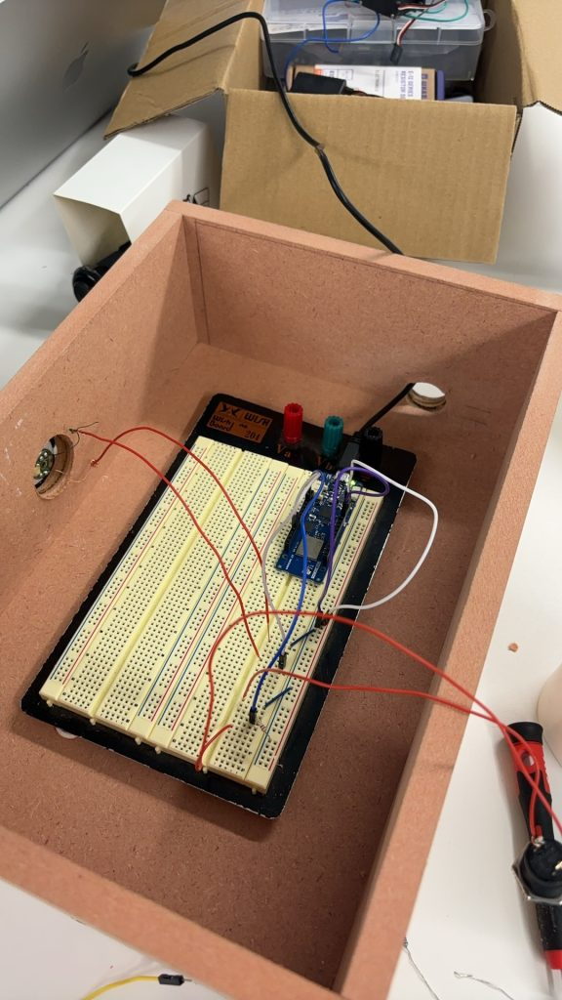

Overview
In this project, our team designed and fabricated an anti-theft device, inspired by the anti-theft mechanism in the Barbie Dreamhouse. The purpose of this device is to trigger an alarm by detecting whether an item has been removed, thus protecting valuable items. This project presented us with several challenges and learning opportunities in sensor integration, mechanical design, and creating an effective user experience.

Concept and Design
The core concept of our device is to create a system that can detect the presence of an item and activate an alarm when the item is removed. To achieve this goal, we designed a rectangular wooden box to house all the necessary components. The box has multiple functional elements: a hole for installing the sensor button, some holes for wire connections and a speaker, and a mechanism for fixing the item.
This mechanism relies on four springs connected to an acrylic plate to fix the item. When the item is not on the plate, the springs will lift the plate up, preventing the button from being pressed. However, when the item is placed on it, it will press down the button, activate the sensor, and trigger the alarm.
Sensor Integration and Wiring
One of the key challenges we faced was how to integrate the sensor and ensure that it could respond to changes in the weight of the item. We used a basic weight sensor setup to detect whether the item had been removed. When the item is placed on the plate, the weight will fully compress the springs, keeping the button in the “pressed” state. However, once the item is removed, the spring mechanism will cause the plate to return to the raised position and be in the “unpressed” state, activating the sensor.
We also needed to consider the wiring of the sensor and the speaker. The sensor wires need to be carefully routed through the holes on one side of the box to ensure a stable connection. Meanwhile, we installed a speaker so that it can emit a loud alarm sound when the item is removed. Ensuring that the alarm is loud enough and the connection is stable was our main concern. And inside the long box, we will install and fix the components of the Arduino.
Mechanical Design
Using springs to create a responsive mechanism was an interesting mechanical challenge. We selected the appropriate spring tension to ensure that the plate would only be pressed down when there was enough weight. This part of the design went through some trials and adjustments because we needed to balance the spring tension and the weight of typical items placed on the box. In addition, we also needed to ensure that the acrylic plate was firmly connected to the springs and could withstand repeated pressure without deformation. So we drilled it onto the box with screws. This project taught me the knowledge of how to combine mechanical and electronic components into a complete system. This was my first attempt to combine springs, sensors, and wires to create an effective security mechanism, and I deeply understood how these elements interact with each other.
Conclusion
Overall, the anti-theft device project was a valuable learning experience that enhanced my understanding of mechanical design and sensor integration. By making this device, I became more aware of how important careful planning, testing, and iteration are when creating a functional system.